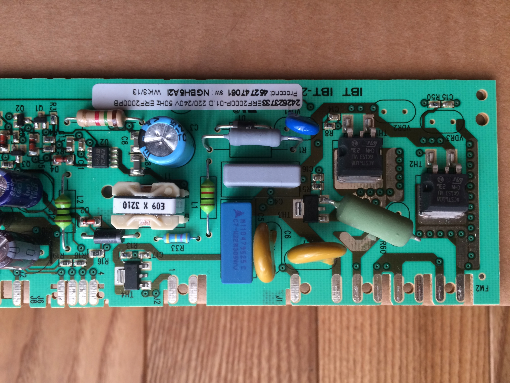
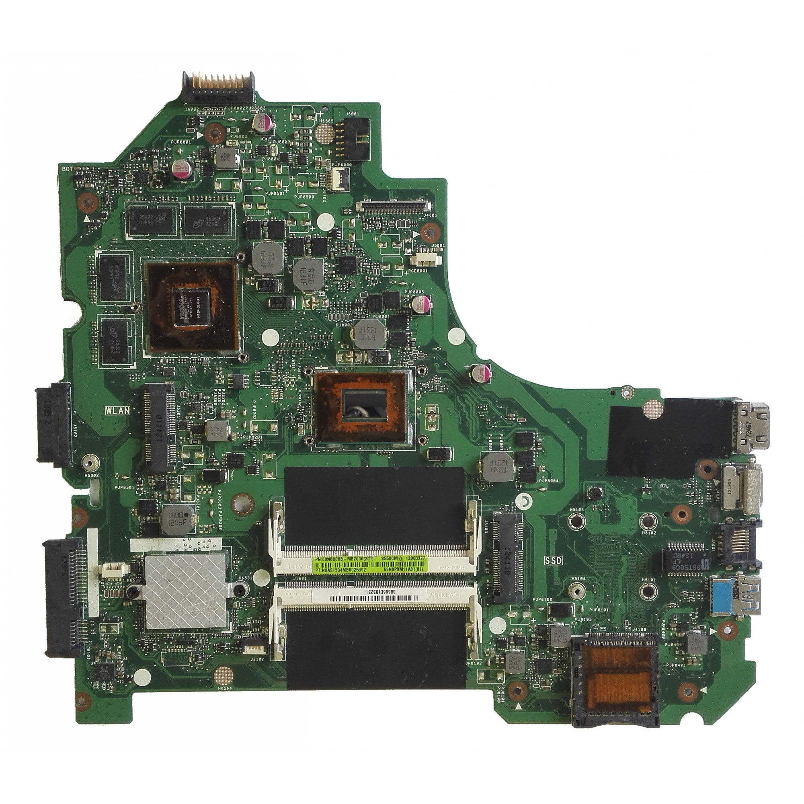

Elektronika do bardzo ciekawa dziezina nauki, zajmująca
się przetwarzanie i generowaniem sygnałów elektrycznych.
Często nie zdjamey sobie sprawy jak obecna jest ona w naszym życiu.
Gdzie obecna jest elektronika?
Obecnie na co dzień korzystamy urządzeń elektornicznych, np.telefonów, komputerów telewizorów, czy lodówek.
W poznawaniu tej dziedziny techniki mogą pomóc nam te kanały: RS elektronika czy Redukor szumu
Przykłady elektroniki z urządzeń codziennego użytku
Elektronika z lodówki

Elektronika z laptopa
